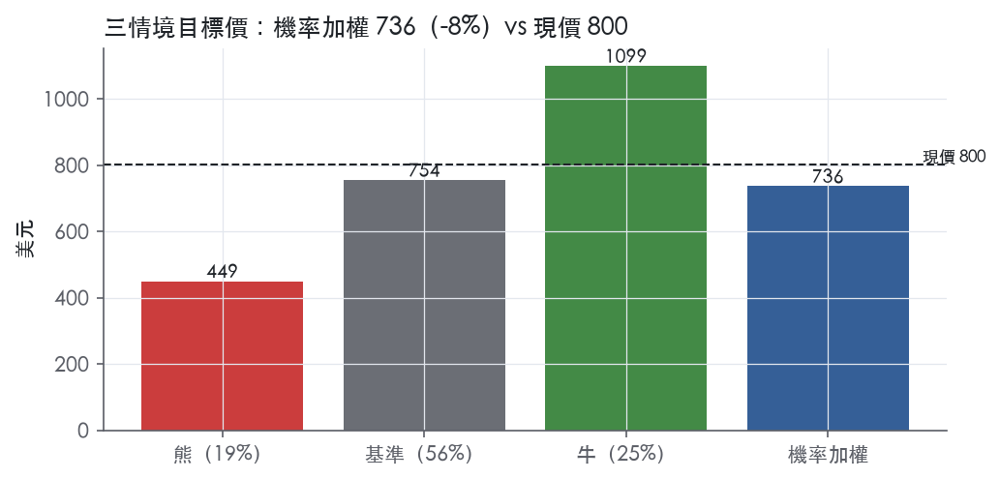
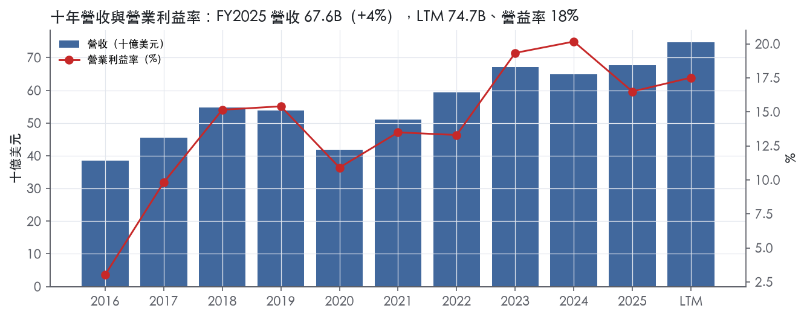
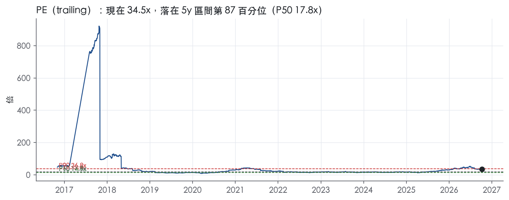
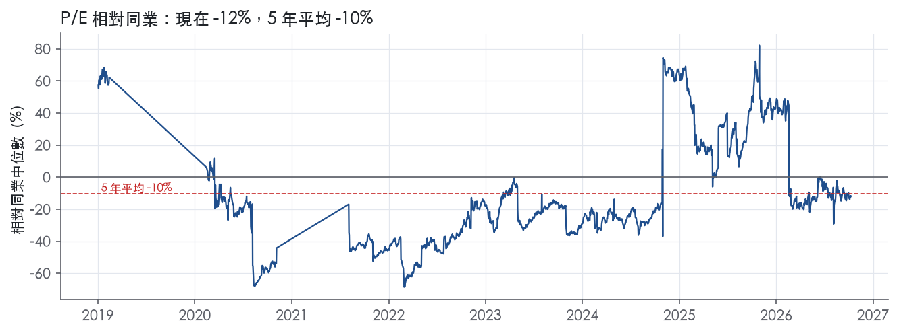
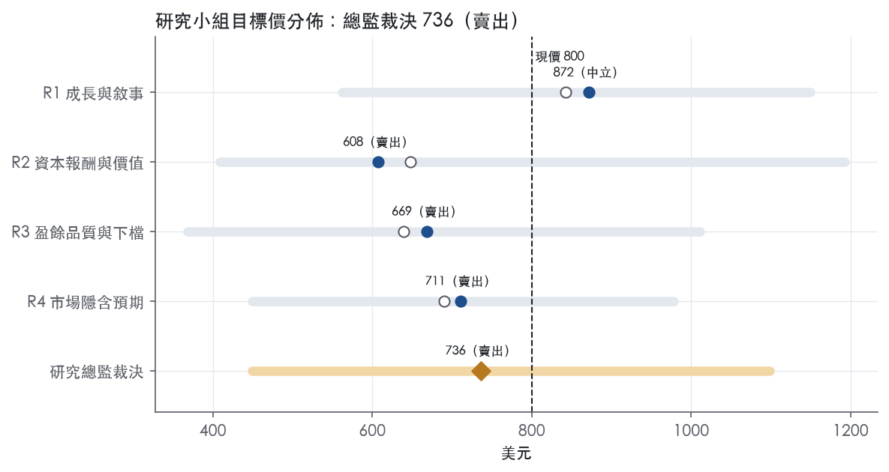
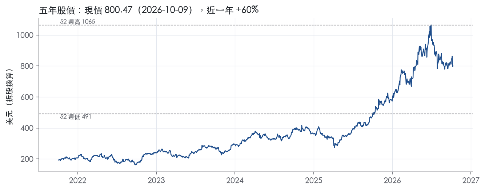

評等總表 › 工業 › CAT
盈餘兌現但倍數收斂，報酬不及門檻｜評等 賣出｜目標價 736
| 評等 | 賣出（邊界，鄰近減碼） |
| 12 個月目標價 | 736 美元 |
| 現價 | 800.47 美元（2026-10-09） |
| 預期報酬 | 股價 -8.0%＋股息 0.8%＝總報酬 -7.3%；同業籃門檻 10.2%，超額 -17.5% |
| 估值方法 | P/E 25.0x，套在第 5–8 季的EPS（也就是一年後的未來四季） |
| 三情境 | 熊 449／基準 754／牛 1099 |
| 研究流程 | 四位研究員兩輪辯論＋研究總監裁決 |
| 資料來源 | SEC EDGAR XBRL、Tiingo、FRED（全免費） |
盈餘兌現但倍數收斂，報酬不及門檻（研究總監裁決，四位研究員兩輪辯論後）
評等 賣出（邊界，鄰近減碼）｜12 個月目標價 736 美元（總監三情境機率加權 782 與研究員中位數 690 各半）｜現價 800.47（2026-10-09）
預期報酬：股價 -8.0%＋股息 0.8%＝總報酬 -7.3%。同業籃門檻 10.2%，超額 -17.5%，離減碼的分界不到三個百分點，屬邊界評等（落在其他級距的機率約三成）。
估值方法：P/E 25.0x，套在第 5–8 季的EPS（也就是一年後的未來四季）。三情境：熊 449（19%）／基準 754（56%）／牛 1099（25%）。
什麼會讓研究總監改變看法：2026 年底在手訂單較 Q2'26 下降或 Q3 將 FY2026 關稅預估上調至 2.6B 以上，倍數下修到 22x；在手訂單續增、P&E 分部利潤率揭露高於集團平均且扣回收後營益率連兩季 ≥20%，倍數上修到 28x 轉中性。
| 過去四季（實際，FY2026Q2） | 未來四季 | 第 5–8 季 | 第 9–12 季 | |
|---|---|---|---|---|
| 營收（B） | 74.7B | 85.9B | 93.7B | 99.3B |
| 營收成長 | 18.4% | 15.0% | 9.0% | 6.0% |
| 營業利益率 | 17.5% | 18.5% | 18.5% | 18.0% |
| EPS（美元） | 23.20 | 27.15 | 30.17 | 31.72 |
| EPS 成長 | 18.5% | 17.0% | 11.1% | 5.1% |
| 每股股息（美元） | — | 0.00 | 0.00 | 0.00 |
| P/E（現價） | 34.5x | 29.5x | 26.5x | 25.2x |
| 股息殖利率（現價） | 0.8% | — | — | — |
過去四季為申報數字；預測為研究總監的假設、程式計算。倍數與殖利率都用現價計算，用來看現價對應各期獲利的高低。
| 情境 | 機率（歷史） | 故事 | 未來四季營收成長 | 第 5–8 季營益率 | 倍數 | 目標價 | 股價漲跌 |
|---|---|---|---|---|---|---|---|
| 熊 | 19%（20%） | 風險表第 1 條關稅 2.6B 且緩解失敗再高約 20%、第 2 條經銷商去庫存與 CI 價格讓步重演 FY2025、第 3 條倍數回前瞻帶 P90；觸發：FY2026Q4 在手訂單較 Q2'26 下降 | 9.0% | 16.5% | 20.0x | 449 | -43.9% |
| 基準 | 56%（56%） | 訂單如期出貨、成長 15%→9%→6%、關稅在 2.6B 內、個股溢價溫和收斂 | 15.0% | 18.5% | 25.0x | 754 | -5.8% |
| 牛 | 25%（24%） | 資料中心電力與北美基建延長週期，利潤率越過 FY2024 的 20.2%，訂單續過 51.2B，市場不降評（R1 驅動、倍數改 q5_q8 口徑 28x） | 22.0% | 21.5% | 28.0x | 1099 | 37.3% |
目標價由程式依研究總監的驅動與倍數計算；機率由研究總監給定。括號內是歷史頻率：把這檔股票過去十年 12 個月報酬的波動形狀，置中在基準情境，結果落在各情境附近的比例。

四位研究員用不同方法各自估值，回應研究總監的質疑後交出第二輪，最後由總監逐點裁決。各研究員的主張見第七章，裁決理由見第八章，完整論證見《研究底稿》。
| 立場（一輪→二輪） | 加權目標價（一輪→二輪） | 評等（一輪→二輪） | 第二輪倍數 | 熊～牛目標價 | |
|---|---|---|---|---|---|
| R1 成長與敘事 | 中性→中性 | 842→872 | 中立→中立 | 30.0x | 562～1149 |
| R2 資本報酬與價值 | 看空→看空 | 648→608 | 賣出→賣出 | 20.0x | 409～1193 |
| R3 盈餘品質與下檔 | 看空→看空 | 639→669 | 賣出→賣出 | 23.0x | 368～1011 |
| R4 市場隱含預期 | 看空→看空 | 690→711 | 賣出→賣出 | 24.0x | 449～978 |
| 研究總監裁決 | 看空 | 736 | 賣出 | 25.0x | 449～1099 |
目標價由程式依各自的驅動與倍數計算；評等＝機率加權總報酬 − 同業籃門檻。
Caterpillar 是全球最大的建築與採礦設備製造商，同時生產非公路柴油與天然氣引擎、工業燃氣渦輪機與柴電機車頭¹。公司以 Machinery, Power & Energy（設計、製造與行銷產品）與 Financial Products（融資與保險）兩大類別組織運作，前者透過全球最大獨立經銷商網路之一銷售，後者由 Cat Financial 提供配套融資¹。客戶群涵蓋基礎建設與建築營造、採礦、石油天然氣、發電、船舶、鐵路與工業應用¹。FY2025 營收 67.59B 美元，LTM 已回升至 74.73B 美元，公司本質是一家重資產、強週期性的重型機械＋動力系統巨頭。
公司現有四個可報告分部：Construction Industries、Resource Industries、Power & Energy 與 Financial Products¹。Construction Industries 主要服務基礎建設與一般營造、租賃、採石與礦業客戶，產品包括挖掘機、輪型裝載機、推土機、瀝青攤鋪機等¹；針對開發中市場另推出 SEM 品牌機型以價格優勢切入¹。Resource Industries 服務地表與地下採礦客戶，產品涵蓋電動鏟、礦用卡車、鑽機等，並銷售車隊管理、自主機械能力等技術服務¹。Power & Energy 涵蓋往復式引擎、發電機組、渦輪機、電氣化動力系統與柴電機車頭，並包含 Caterpillar 引擎的再製造業務¹。Financial Products 由 Cat Financial 與 Insurance Services 構成，提供零售／批發融資、租賃與保險產品，主要業務集中於北美¹。從最近一季結構看，Construction Industries 單季營收 8.346B 美元為最大分部，Power & Energy 8.238B 美元次之，Resource Industries 4.648B 美元，Financial Products 1.145B 美元²；三大主力分部營收年增率分別為 35%、17%、20%，Construction Industries 成長最快²。各分部佔總營收比重 10-K 未揭露具體百分比，僅揭露金額。
公司透過全球經銷商網路銷售機械，美國境內 41 家、境外 109 家，服務 190 個國家¹；往復式引擎亦透過子公司 Perkins（86 家經銷商、覆蓋 183 國）與 FG Wilson 品牌發電系統經銷網（108 家經銷商、覆蓋 159 國）銷售¹。渦輪機與機車頭主要由公司自有銷售團隊直接銷售給終端客戶¹。地區上，最近一季北美營收 12.094B 美元、年增 37%，為最大且成長最快市場，EAME 3.625B 美元（+14%）、拉丁美洲 1.821B 美元（+10%）、亞太 3.003B 美元（+4%）相對落後²。北美需求以 Construction Industries 年增 50% 最為顯著，反映美國本土基礎建設與終端設備需求強勁。
FY2025Q3 營收 17.64B 美元，年增 9.5%，營益率 17.3%（is/bs 資料包）。FY2025Q4 營收 19.13B 美元，年增 18.0%，但營益率降至 13.9%，毛利率同步下滑至 30.5%（資料包推導）。FY2026Q1 營收 17.415B 美元，較去年同期 14.249B 美元增加 22%，主因銷量增加 2.3B 美元與價格實現挹注 426M 美元³；營業利潤率為 17.7%，較去年同期 18.1% 略降，因製造成本不利影響 710M 美元（主要反映關稅成本上升）與 SG&A／研發費用增加 225M 美元³。管理層表示「強勁的銷售與營收增長，加上穩健的訂單活動，證明了我們業務的實力」，並指出創紀錄的在手訂單為持續成長提供基礎³。FY2026Q2 營收達 20.543B 美元，較去年同期 16.569B 美元增加 24%，CEO Joe Creed 表示「這是公司歷史上首次單一季度銷售與營收超過 20B 美元」²；營業利潤率升至 20.9%（去年同期 17.3%），調整後營業利潤率 21.9%，營業利潤內含 392M 美元預期的 IEEPA 關稅回收²。公司並稱「強勁的訂單率與持續擴大的在手訂單反映三大主力分部的動能正在擴散」²。整體趨勢是營收與利潤率同步加速回升，Q2 已是四季中表現最強的一季。
公司在 2025 年提出新使命「解決客戶最棘手的挑戰」，並訂出三大成長支柱：Commercial Excellence、Advanced Technology Leader 與 Transform How We Work，建立在既有 Operational Excellence 基礎上，並以 Operating & Execution model 為指導框架¹。公司強調積體化技術領先優勢，例如在 Resource Industries 自主機械能力、車隊管理分析與礦業績效解決方案，以及在 Construction Industries 以 SEM 品牌切入開發中市場價格敏感客群¹。訂單方面，公司揭露 FY2025 年末在手訂單約 51.2B 美元，較 FY2024 年末 30.0B 美元大幅成長，其中 Power & Energy 增幅最大，約 19.3B 美元預期將在 2026 年以後才能履約¹。管理層在 FY2026Q1 新聞稿中將「創紀錄的在手訂單」定位為持續正向動能的基礎，Q2 新聞稿再強調三大主力分部訂單率與在手訂單皆呈擴大趨勢³²。公司近四季營收與利潤率同步改善，顯示電力需求（尤其是資料中心驅動的發電應用）與北美建築設備需求是短期最主要的成長引擎。但 FY2025 全年毛利率（33.8%）與營益率（16.5%）均低於 FY2023–FY2024 高點，顯示關稅成本與原物料壓力仍是獲利能見度的主要風險。目前股價對應 trailing P/E 34.5x，處於近五年 86.9% 分位，市場已給予較高的成長預期，留給執行失誤的空間有限。

CAT 的護城河評級為窄：我們有把握未來 5 年以上 ROIC 高於資本成本，但沒有把握延伸到 10 年以上。支撐評級的是經銷與售後體系形成的轉換成本，以及元件整合與採購規模帶來的成本優勢。不給寬，原因是十年內有兩年 ROIC 低於資本成本代理值，而且 10-K 自承所處市場競爭激烈、業務不依賴專利。趨勢判為穩定：近三年 ROIC 位於十年區間上緣，但 FY2025 已從高點回落，這反映週期位置，不是結構性變寬。
CAT 的優勢來自轉換成本與成本優勢兩類，以轉換成本為主。
轉換成本
成本優勢
無形資產不列入來源：公司表示，其業務不依賴任何單一專利或專利組合¹。
數字支持「窄」，不支持「寬」。
支持的部分
衝突的部分
為什麼維持窄
最大的侵蝕來源是中國與區域競爭者引發的價格戰，其次是經銷網路的非排他性。
價格競爭
通路非排他
融資優勢可被複製
技術轉換
近期利潤率壓力
目標倍數相對同業應給小幅溢價，不支持大幅溢價。理由是經銷與售後體系的轉換成本、以總擁有成本為核心的成本優勢，支撐穿越週期的超額報酬；但 ROIC 有兩年低於資本成本、營益率標準差達 4.7%，超額報酬的期間應以 5 年左右估算，不宜當成永續。目前 P/E 34.5x 位於近五年 86.9% 分位，遠高於 5 年中位數 17.8x，倍數應以十年平均 ROIC 16.8%作為錨，不應以目前高檔的利潤率作錨。
| 指標 | 最新 | 十年平均 | 標準差 | 最低 | 最高 |
|---|---|---|---|---|---|
| ROIC | 18.4% | 16.8% | 5.4% | 8.2% | 24.8% |
| 毛利率 | 33.8% | 32.2% | 3.0% | 27.2% | 38.0% |
| 營業利益率 | 16.5% | 13.7% | 4.7% | 3.0% | 20.2% |
| FCF 利潤率 | 13.2% | 12.4% | 2.1% | 9.7% | 16.8% |
| ROE | 43.5% | 39.1% | 15.6% | 5.6% | 58.4% |
程式計算。資本成本代理值（10 年債＋5%）：10.2%；ROIC 平均減資本成本：6.6%；ROIC 有資料的 9 年中，高於資本成本 7 年。
Caterpillar 的 LTM 與近三年現金流對淨利的轉換都站在綠燈區，CFO／淨利 LTM 1.25x、近三年 1.23x，FCF／淨利 LTM 0.99x、近三年 1.01x，顯示當期盈餘有實際現金支撐。但淨負債／EBITDA 在 LTM 已升到 1.91x，觸及黃燈，加上 FY2025 應收帳款成長超過營收成長達 13.4pp，這兩項需要在估值上打一點折扣，而不是直接視為高品質。
LTM 與近三年的現金轉換指標都乾淨，CFO／淨利 1.25x／1.23x、FCF／淨利 0.99x／1.01x，均優於或貼近綠燈門檻 1.00x／0.90x，代表近期盈餘不是靠應計堆出來的。應計比率 LTM -2.8%、近三年 -2.5%，均為負值且遠優於 5.0% 的紅線，負值越大代表盈餘比現金流還保守，這是正向訊號。十年平均的 CFO／淨利 -7.78x 與 FCF／淨利 -6.19x 看起來極端異常，但這是分母扭曲造成的假訊號：FY2016 淨利僅 -0.06B（資料包年度表），接近零且為負，任何正常 CFO 除以這麼小的負分母都會爆出天文數字的負比率，不代表公司過去十年現金真的跟不上盈餘。把 FY2016 那年的極端值拿掉看，FY2017 之後每年 CFO 與 FCF 都穩定為正且規模持續放大（資料包年度表），這個十年均值紅字是算術假警報，不是真實盈餘品質問題。
2Q26 財報新聞稿揭露 GAAP 每股利潤 7.77 美元、調整後每股利潤 8.17 美元，差距主要排除重組費用²。營業利益 2Q26 為 4.295B 美元，其中包含 392M 美元預期的 IEEPA 關稅回收款，這筆屬於與關稅相關的一次性認列，不是常態經營產生的現金利潤²。稅務面，公司記錄了 26M 美元的離散稅務利益，來自股權激勵獎酬結算時稅扣抵超過累計 GAAP 薪酬費用的部分，同時將處分若干非美國個體產生的 139M 美元損失排除在全年有效稅率估計之外，因為該損失沒有相應的稅務利益²。其他收益（費損）項目從去年同期的 84M 美元躍升至 398M 美元，主要來自外匯、總回報交換合約與投資利息收入的有利影響，這塊波動性高，不應視為可持續的核心收益²。整體看，調整後 EPS 與 GAAP EPS 的落差主要是重組費用與稅務離散項，規模相對 GAAP EPS 不算誘人地大，可以判斷公司的非 GAAP 調整不是在系統性美化盈餘。但 IEEPA 關稅回收款與一次性的 FX／互換損益屬於真實現金但非核心、波動性大的項目，估值時應視為一次性加分，不計入長期常態盈餘基礎。
槓桿指標顯示淨負債／EBITDA LTM 1.91x、近三年均 1.68x，略高於 1.50x 的綠燈門檻但遠低於 3.00x 紅線，呈黃燈。值得注意的是十年平均槓桿反而更高、達 2.50x，代表目前的槓桿水準其實比歷史均值低，黃燈更多反映短期淨負債（29.50B）隨 Cat Financial 放款規模擴張而上升，而非資本結構惡化。10-K 說明 Cat Financial 採用「match-funding」政策，讓負債的利率結構（固定／浮動與期限）與應收帳款組合的利率結構對齊，這代表這塊舉債是對應生息資產、不是純粹拉高財務風險的融資¹。股東回饋方面，（股利＋回購）／淨利 LTM 92.6%、近三年 86.1%，均落在綠燈且低於 100%，代表公司沒有明顯舉債去撐回饋；十年平均 -206.6% 的異常值同樣是 FY2016 淨利接近零/負值造成的分母扭曲假警報，不是真的曾經大幅超額回饋股東。稀釋股數變動持續負值（LTM -0.7%、近三年 -3.8%），顯示回購確實在淨減少股數，對每股盈餘是加分而非稀釋。2Q26 單季就動用 2.2B 美元現金用於股票回購與股利，其中 1.5B 美元回購、0.7B 美元股利²，資本配置節奏積極但仍落在淨利可支撐的範圍內。
淨負債／EBITDA 黃燈（LTM 1.91x）：真實但程度有限，主因是 Cat Financial 放款業務擴張推升總負債，而該業務採 match-funding 對齊資產負債的利率結構¹，且目前水準仍低於十年均值 2.50x，不構成限制槓桿倍數的理由，但估值時槓桿不應再往上推太多。
應收帳款成長超過營收成長 +13.4pp（FY2025）黃燈：部分可用訂單回溫解釋——10-K 揭露 2025 年底在手訂單餘額約 51.2B 美元，較 2024 年底的 30.0B 美元大幅增加，其中約 19.3B 美元預計 2026 年才會出貨¹，顯示需求端擴張帶動應收與融資應收款同步墊高，屬於成長中的營運資金壓力，而非收入認列品質惡化的訊號，但仍需在下一份財報確認應收帳款是否持續超車營收。
存貨成長 − 營收成長 +3.5pp（FY2025）綠燈：落在門檻內，沒有庫存堆積去撐營收的跡象。
利息保障倍數缺值：計分表該欄為「—」，屬於資料缺口而非真實紅旗，但考慮到淨負債規模（29.50B）與槓桿黃燈並存，建議下次更新資料包時補齊這項，暫不納入品質扣分。
SBC／營收 0.3%（LTM、近三年）綠燈：遠低於 3.0% 門檻，股權酬勞稀釋對營收與盈餘的侵蝕極小，不是需要加回調整的項目。
十年平均 CFO／淨利、FCF／淨利 與（股利＋回購）／淨利 出現極端負值：前文已說明，三者都是 FY2016 淨利接近零/負值造成的分母爆炸，屬於計算口徑的假警報，不代表公司歷史上現金流或回饋出現系統性問題。
估值應以 GAAP 盈餘為主軸，調整後 EPS 8.17 美元中排除的重組費用與 2Q26 營業利益裡的 392M 美元 IEEPA 關稅回收款都偏一次性，不宜直接外推進永續盈餘估計。整體盈餘品質可定為中等：現金轉換扎實、SBC 侵蝕極低，但應收帳款成長超車營收與淨負債／EBITDA 黃燈代表營運資金與槓桿正在隨訂單擴張同步墊高，建議估值模型對近兩年的 FCF 成長率略打折、並將槓桿上限設在接近目前水準而非歷史高點，不建議給予更寬鬆的倍數。
| 項目 | LTM | 近三年 | 十年 | 燈號 | 規則 |
|---|---|---|---|---|---|
| 營業現金流／淨利 | 1.25x | 1.23x | -7.78x | 綠 | ≥1.00x 綠、<0.80x 紅 |
| 自由現金流／淨利 | 0.99x | 1.01x | -6.19x | 綠 | ≥0.90x 綠、<0.60x 紅 |
| 應計比率（(淨利−CFO)／平均總資產） | -2.8% | -2.5% | -2.4% | 綠 | ≤0.0% 綠、>5.0% 紅 |
| SBC／營收 | 0.3% | 0.3% | 0.4% | 綠 | ≤3.0% 綠、>8.0% 紅 |
| 淨負債／EBITDA | 1.91x | 1.68x | 2.50x | 黃 | ≤1.50x 綠、>3.00x 紅 |
| 利息保障倍數（營業利益／利息） | — | — | — | — | ≥8.00x 綠、<3.00x 紅 |
| 稀釋股數年變動 | -0.7% | -3.8% | -2.3% | 綠 | ≤0.0% 綠、>3.0% 紅 |
| （股利＋回購）／淨利 | 92.6% | 86.1% | -206.6% | 綠 | ≥50.0% 綠、<0.0% 紅 |
| 應收帳款成長 − 營收成長（FY2025） | +13.4pp | — | — | 黃 | ≤5pp 綠、>15pp 紅 |
| 存貨成長 − 營收成長（FY2025） | +3.5pp | — | — | 綠 | ≤5pp 綠、>15pp 紅 |
程式計算；燈號以 LTM（無則近三年平均）判定。
| 風險 | 觸發指標（看什麼數字、在哪裡看） | 對 EPS 的影響方向與粗略幅度 | 未來 12 個月發生機率（高／中／低） | 出處 |
|---|---|---|---|---|
| 關稅成本持續上升，侵蝕製造成本 | 公司每季 10-Q／8-K 揭露的「關稅影響」美元數字；FY2026 公司預估影響約 2.6B 美元（較 2025 年多 800M 美元） | 負向，中～大：若不採取緩解行動影響可能再高約 20%⁴ | 高 | 10-K 年報 FY2025 Item 1A（風險因素） |
| 週期性需求（建築、採礦、能源終端市場）轉弱 | 經銷商庫存變動（Dealer Inventories）、各分部銷量（Sales Volume）增減，於每季 10-Q／8-K「Sales and Revenues by Segment」表 | 負向，大：FY2025 Construction Industries 獲利年減 1.490B 美元（-24%）主因不利價格與製造成本⁴ | 中 | 10-K 年報 FY2025 Item 1A（風險因素） |
| 估值已處於歷史高分位，任何成長不及預期都會觸發倍數收縮 | trailing P/E 現為 34.5x，位於近五年 86.9% 分位（band.pe） | 對股價而非 EPS 本身，但倍數回落至 5y P50 17.8x 將大幅壓低股價 | 中 | 【判，量化底稿 band.pe】 |
| 信用評等與融資成本上升（Cat Financial 槓桿／利差擴大） | Cat Financial 槓桿比率（年末 8.21:1，上限 10:1）、利息覆蓋率（1.53:1，下限 1.15:1）、HY/IG OAS 走勢 | 負向，中：若評等遭下調將提高借貸成本⁴ | 低 | 10-K 年報 FY2025 Item 1A（風險因素） |
| 商品價格下跌衝擊 Resource Industries 需求與商譜減損測試 | 關鍵商品（銅、金等）價格、Resource Industries 分部獲利年增率 | 負向，中：可能觸發商譜減損測試失敗，產生非現金減損⁴ | 低 | 10-K 年報 FY2025 Item 1A（風險因素） |
關稅成本是目前最直接衝擊盈餘的變數。 公司 FY2025 營業利潤年減 1.921B 美元，主因「不利製造成本largely reflected the impact of higher tariffs」⁴。公司預估 FY2026 關稅影響約 2.6B 美元，較 2025 年增加 800M 美元，若公司未能落實計劃中的緩解措施，影響可能再高約 20%⁴。這條風險的好處是極易監測：公司每季都會在新聞稿中揭露當季關稅影響的具體金額（如 FY2026Q2 認列 392M 美元 IEEPA 關稅預期回收）²，投資人可逐季追蹤趨勢是否惡化或改善。
週期性需求轉弱已有先例可循。 FY2025 Construction Industries 銷售年減 395M 美元（-2%），主因不利價格實現 1.136B 美元，獲利年減 1.490B 美元（-24%）⁴。公司在 10-K 中也揭露「對 reporting unit 商譜減損測試而言，需求高度週期性，且顯著受商品價格影響，能源與採礦業是公司產品的主要使用者」⁴。雖然近兩季（FY2026Q1、Q2）營收與利潤率同步加速回升²，但這正是週期高點時期常見的現象，一旦終端市場（尤其北美基礎建設支出、資料中心建置）放緩，經銷商庫存去化將快速反映在銷量項目上。
高估值放大任何失望的衝擊。 目前 trailing P/E 34.5x，位於近五年 86.9% 分位，遠高於 5 年中位數 17.8x 與 10 年中位數 19.0x（band.pe）。這不是公司寫在 10-K 裡的風險，而是量化底稿顯示的市場定價狀態——任何成長不如預期的訊號都可能觸發倍數向中位數回歸，對股價的殺傷力遠大於 EPS 本身的調整幅度。
Cat Financial 的槓桿與信評是尾部風險。 公司揭露 Cat Financial 年末槓桿比率 8.21:1（上限 10:1）、利息覆蓋率 1.53:1（下限 1.15:1）⁴，公司並明確點名「若 Caterpillar 或 Cat Financial 未能符合其中一項或多項財務契約...聯合銀行可能終止承諾額度」為揭露的風險因子⁴。目前比率距離門檻尚有緩衝，發生機率列為低，但若信用市場（ig_oas、hy_oas）快速走闌，融資成本上升會直接壓縮 Financial Products 分部利潤。
商品價格與商譜減損是第二層尾部風險。 公司明確寫道「商品價格較低或產業特定情況可能對估值假設產生負面影響，進而降低報告單位的公允價值」，且「未來的減損測試可能導致商譜減損」⁴。目前年度測試結果顯示公允價值「substantially above」帳面價值⁴，緩衝尚足，故列為低機率，但仍是可監測（看商品價格與 Resource Industries 分部獲利年增率）且一旦觸發就是非現金但會打擊帳面權益與市場信心的事件。
**1.近兩季營收與利潤率同步加速回升（FY2026Q1 營收年增 22%、Q2 年增 24%，營業利潤率升至 20.9%）²，但這段加速高度依賴資料中心驅動的發電需求與北美建築設備補庫存，一旦這兩股動能同時降溫，目前隱含在股價中的高成長預期（P/E 86.9% 分位）將面臨比歷史平均更劇烈的修正壓力，這點公司並未在風險因子中量化揭露。
**2.公司在 FY2026 將 Rail 事業部從 Power & Energy 移至 Resource Industries，並將於 2026 年 3 月透過 8-K 追溯重編歷史分部數字⁴；這項重編本身不影響集團層級假設，但會讓分部層級的歷史可比性短期中斷，投資人在評估 Resource Industries 或 Power & Energy 單一分部的成長/利潤率趨勢時，需特別留意重編前後口徑是否一致，避免誤判分部真實動能。
現價 800.47 對應 trailing（過去四季）P/E 34.5x、EV/EBITDA 25.7x、EV/EBITA 30.0x、EV/Sales 5.3x、FCF 殖利率 2.9%。主要估值倍數 P/E 現在 34.5x，落在5 年區間第 87 百分位（P10／P50／P90 = 14.9x／17.8x／36.8x）。

把程式的機械基準預測放到現價下，市場付的前瞻倍數是：P/E（未來四季） 30.7x、P/E（第 5–8 季） 27.3x。反推 DCF 顯示市價隱含未來五年營收年成長 18.4%（WACC 9.0%、終值成長 3.0%、FCF 利潤率 13.1%，SBC 不加回）。
| 倍數 | 現在 | 5 年 P10 | 5 年 P50 | 5 年 P90 | 現在分位 | 全期 P50 |
|---|---|---|---|---|---|---|
| P/E | 34.5x | 14.9x | 17.8x | 36.8x | 86.9% | 19.0x |
| EV/EBITDA | 25.8x | — | — | — | — | 15.0x |
| EV/EBITA | 30.1x | — | — | — | — | 19.6x |
| EV/EBIT | 30.5x | — | — | — | — | 20.5x |
| EV/Sales | 5.3x | — | — | — | — | 2.9x |
| P/S | 5.0x | 1.9x | 2.5x | 5.0x | 88.3% | 2.2x |
| P/FCF | 34.6x | 14.6x | 18.2x | 36.7x | 86.8% | 17.7x |
trailing 倍數（股價 ÷ 過去四季）；分位以每個交易日計算。
同業籃：CNH, MTW, AEBI, ASTE, CMCO, PLOW（SIC 3531 同業 7 家中，CY2025 營收最接近的 6 家）。評等門檻 10.2%：同業「倍數不變下持有一年」的隱含報酬中位數（＝ FCF 殖利率 ×(1＋g)＋g，g 為 5 年營收年複合成長並夾在 −2%～8%），每家夾在 0～15%、P/E 低於 5 倍視為資料可疑而排除，中位數再限制在 10 年債到 10 年債＋5% 之間（同業原始中位數 10.5%）；排除：CMCO（隱含報酬算不出來）。
| 代號 | 市值 | 5 年營收 CAGR | 營益率 | ROIC | P/E | 5 年 P/E 中位數 | EV/EBITDA | P/FCF | 隱含報酬 |
|---|---|---|---|---|---|---|---|---|---|
| CAT | 368.0B | 10.1% | 17.5% | 18.4% | 34.5x | 17.8x | 25.7x | 34.4x | 11.1% |
| CNH | 14.1B | 4.1% | — | — | 45.8x | — | — | — | 6.4% |
| MTW | 0.8B | 9.2% | 3.1% | 3.4% | 39.1x | — | 8.7x | 11.3x | 17.6% |
| AEBI | 0.9B | 22.6% | 4.5% | 6.3% | 34.5x | — | 9.3x | 143.0x | 8.8% |
| ASTE | 0.9B | 6.6% | 3.4% | 6.0% | 45.6x | — | 11.4x | 27.5x | 10.5% |
| CMCO | 0.5B | 12.9% | -9.6% | -4.7% | — | 25.1x | — | — | — |
| PLOW | 0.9B | 6.4% | 11.3% | 20.6% | 17.8x | 21.7x | 10.3x | 18.4x | 12.2% |
| 同業中位數 | 7.9% | 3.4% | 6.0% | 39.1x | 23.4x | 9.8x | 22.9x | 10.2% |
全部 trailing，程式以各公司 SEC XBRL 與 Tiingo 行情計算；第一列為本檔。
P/E 相對同業中位數：現在 -11.8%，過去 1 年平均 8.5%、3 年 4.7%、5 年 -10.3%；EV/EBITDA 相對同業中位數：現在 161.1%，過去 1 年平均 171.0%、3 年 —、5 年 —。

事後實現前瞻倍數帶（P/E，2018-08-17..2025-08-15）：P10／P50／P90 = 11.3x／15.9x／20.0x。它是每個交易日的股價除以之後四季實際實現的指標；一年後，今天的第 5–8 季正是那時的未來四季，所以這條帶是 12 個月目標價的同口徑倍數。因為用的是事後實際而非當時預期，過去成長超乎預期的公司這條帶會偏低。
程式的機械基準（成長率從過去四季年增率三年收斂到 6%、利潤率持平）用 事後實現前瞻 P/E P50 估值得到 466（-41.8%），市場現行前瞻倍數（現價 ÷ 基準 未來四季指標）一年後持平，套在基準 第 5–8 季指標得到 899。這兩個數字只是參考點，不是本報告的目標價；研究員對這個定價的回應在第七章。
下表是每位研究員第一輪（各自獨立）與第二輪（回應研究總監的質疑後）的結果。目標價全由程式依各自的假設計算。
| 立場（一輪→二輪） | 加權目標價（一輪→二輪） | 評等（一輪→二輪） | 第二輪倍數 | 熊～牛目標價 | |
|---|---|---|---|---|---|
| R1 成長與敘事 | 中性→中性 | 842→872 | 中立→中立 | 30.0x | 562～1149 |
| R2 資本報酬與價值 | 看空→看空 | 648→608 | 賣出→賣出 | 20.0x | 409～1193 |
| R3 盈餘品質與下檔 | 看空→看空 | 639→669 | 賣出→賣出 | 23.0x | 368～1011 |
| R4 市場隱含預期 | 看空→看空 | 690→711 | 賣出→賣出 | 24.0x | 449～978 |
| 研究總監裁決 | 看空 | 736 | 賣出 | 25.0x | 449～1099 |
目標價由程式依各自的驅動與倍數計算；評等＝機率加權總報酬 − 同業籃門檻。
分歧度：第一輪 加權目標價 639～842（區間＝現價的 25%）· 倍數 21～30x · 立場 中性×1、看空×3；第二輪 加權目標價 608～872（區間＝現價的 33%）· 倍數 20～30x · 立場 中性×1、看空×3。

| 研究員 | 第二輪主張 | 堅持的理由 |
|---|---|---|
| R1 成長與敘事 | 中性，給未來四季 EPS 30x，近兩年成長上修到 18% 與 12%。 | 倍數不追現價 34.5x：盈餘接近週期高點，溢價屬個股，沒有類股托底。 |
| R2 資本報酬與價值 | 看空，給第二年 EPS 20x，等於過去前瞻 P/E 的上緣。 | FY2023–24 ROIC 高峰時市場只付 17.8x，34.5x 沒有報酬支撐。 |
| R3 盈餘品質與下檔 | 看空，給第二年 EPS 23x，盈餘真實但處在週期高位。 | 營益率不外推 Q2 的 20.9%，因為它含 392M 一次性關稅回收。 |
| R4 市場隱含預期 | 看空，給第二年 EPS 24x，市場高估高成長能延續多久。 | 2027 年對上北美營建事業年增 50% 的高基期，成長降到 5%。 |
每位研究員的逐條回應與完整論證見《研究底稿》（CAT_研究底稿_2026-10-13.docx）。
| 分歧點 | R1 成長 | R2 價值 | R3 品質 | R4 預期 | 什麼資料會分出勝負 |
|---|---|---|---|---|---|
| Q5–Q8 營收成長（rev_growth_y2） | 12%：19.3B 訂單 2026 年後履約、Q2「growing backlog」 | 7%：連續高成長後必降檔（FY2019、FY2024） | 7%：公司 5–7% CAGR 目標上緣、CI 高基期 | 5%：北美 CI +50% 基期，成長長度被高估 | FY2026 10-K 在手訂單（2027-02）：≥51.2B 且 P&E 占比上升→R1；較 Q2'26 下降→R2–R4 |
| Q5–Q8 營益率（op_margin_y2） | 19.5%：出貨帶動利潤率逼近前高 | 18.0%：Q2 含 392M 回收 | 18.0%：一次性挹注＋重組費年年有 | 18.5%：不含回收的運行率持平 | FY2026Q3 GAAP 營益率扣 IEEPA 項目後：≥19%→R1；<18%→R2/R3 |
| 目標倍數（multiple） | 30x eps@ntm：1y trailing P10 29.2x | 20x eps@q5_q8：前瞻帶 P90 | 23x：P90＋帶偏低＋溢價收斂 | 24x：P90＋成長期偏誤校正（假設） | 2026 年底訂單方向；P&E 分部利潤率揭露；Q4 財報後市場前瞻倍數是否守住 25x 以上 |
| NTM 營收成長（rev_growth_y1） | 18%：Q3 低基期、終端驅動 | 16% | 13%：季度路徑 20／14／10／8 | 15% | FY2026Q3 營收年增（2026-11）：≥20%→R1；≤15%→R3 |
一、rev_growth_y2：裁 own，9%。 證據不對稱。看多方是硬資料：FY2025 年末在手訂單 51.2B 對 FY2024 年末 30.0B，約 19.3B 要到 2026 年以後才履約¹；Q2'26「strong order rates and a growing backlog」、動能「broadening across all three primary segments」，銷量增加 3.1B 主要來自終端客戶²。這直接覆蓋 Q5–Q8 的 P&E 出貨。看空方是型態：FY2019 −1.7%、FY2024 −3.4%的反轉，發生在 30.0B 量級的訂單水位，不是 51.2B；R3 引的 5–7% CAGR 是穿越週期目標⁴，訂單遠高於去年時近期成長本就高於目標；R3 自己確認 2026 年經銷商庫存增加只抵消 2025 年減少的 500M，去庫存反轉的彈藥很小。所以 5–7% 不成立。但 R1 的 12% 也沒有證據：Q5–Q8 要對上的 NTM 四季含 CI 年增 35%、北美 CI 年增 50%²，CI 是單季最大分部（8.346B），訂單揭露沒有說 CI 有多年期覆蓋。我以基準 10.1% 為起點，為 CI 基期下修一檔到 9%（假設）。
二、op_margin_y1／y2：裁 R4，18.5%／18.5%。 四位都高於基準 17.5%，正確：LTM 17.5%被 Q4'25 的 13.9%拖低，不是運行率。上緣在哪？Q2'26 的 20.9%含 392M「預期」IEEPA 回收²；Q1'26 的 17.7%承受 710M 不利製造成本，主因關稅³；FY2026 關稅自估約 2.6B、較 2025 年多 800M⁴。R1 的 19.5% 要超過 FY2023 的 19.3%、逼近 FY2024 的 20.2%，而那兩年沒有這筆關稅——證據不足。R2／R3 把 y2 再降到 18.0%，機制是量能槓桿反轉，與我裁 y2 仍有 9% 成長不相容。R4 的持平 18.5% 以 Q2 扣回收後的水準混合 Q1 關稅季，再以價格實現（Q2 595M、Q1 426M⁵）對沖關稅增量，最貼近兩季原文。y3 自訂 18.0%（假設）：成長收斂到 6%，量能槓桿退一點；我沒讓 y3 停滯，所以不到 R4 的 17%。
三、目標倍數：裁 own，25x eps@q5_q8。 先對齊尺：主尺是 eps@q5_q8，R1 的 30x 套在 ntm、對照 trailing 帶（29.2x），與其他三人不同尺。歷史天花板是事後實現前瞻帶 P90 20.0x。R3、R4 說帶因成長期偏低要上修；但 R2 在 V4 的分段檢視顯示 2018–19 與 2024–25 偏高、2020–23 偏低，淨偏誤近中性——我接受 R2，帶本身不給上修理由，上修只能來自公司特有的體制改變。體制改變有兩條：訂單 51.2B 對 30.0B¹，是帶期間從未出現的能見度；Q2'26 P&E 分部利潤 2,027M 與 CI 的 1,947M 並列²，盈餘組合比帶期間更不週期。這支撐站上 P90。但不到市場隱含 27.3x（零報酬倍數），更不到持平的 30.7x，理由全是個股因素：一年後市場看的下一段（Q9–Q12）成長已收斂到 6%；EV/EBITDA 25.7x 對同業中位數 9.8x 的 161.1% 溢價屬個股敘事，且已從一年均值 171.0% 收斂（同業表），鬆動時沒有類股托底；FY2023–24 ROIC 24.8%／24.4%當年只換到 5y P50 17.8x，今天的 34.5x 買的是成長長度，而我的基準不交付那個長度。25x 標為假設：27.3x 下修約兩檔；R4 的 24x 配 y2 5%，我的 y2 9% 多一檔。R1 錨在 1y P10，等於假設敘事不鬆動的同時成長減速，兩者並存的機率不夠。利率：R4 已刪「帶期利率較低」，接受；R2 在資本配置段以 FCF 殖利率 2.9% 對 10 年債 5.22%論「不足以支撐持有」，這是利率論，門檻已含利率——他的 20x 錨在帶 P90，倍數本身不受影響，只退回這段修辭。
四、rev_growth_y1：裁 R4，15%。 Q3'25 基期只成長 9.5%，Q3'26 容易；Q4'25 +18.0%、Q1'26 +22.2%、Q2'26 +24.0%是後三季的高基期。R3 的 20／14／10／8 是唯一攤開的季度路徑，但沒給價格實現與訂單續增位置；R1 的 18% 要四季都接近 Q2 增速去對逐季抬高的基期。15% 是兩者相抵的位置。
漂移：無退回。 R3 靎攏 58%，但每一步對應我轉給他的證據（Q1 原句「and higher sales of equipment to end users」漏引更正→y1、y2 上修；機率回歷史是我 Q5 的要求）。R2、R4、R1 都在遠離中位數。程式標的「對不上來源」數字——R3 的 8.261／6.795（8-K 對外銷售口徑）、R2 的 19.3（10-K）、R4 的 689.60（第一輪程式結果）——來源合法，不處理。
與機械基準不同的驅動：
目標倍數 25x，metric eps，horizon q5_q8——前瞻帶口徑，與事後實現前瞻帶（P50 15.9x／P90 20.0x）、市場隱含 Q5–Q8 27.3x 直接可比，不需換算。錨：市場隱含 27.3x 下修約兩檔（假設），下限參考帶 P90 20.0x；明確不取持平參考點 30.7x（對應 899）。相對同業：同業 P/E 中位數 39.1x 是 3.4% 營益率中位數撐出來的失真值，EV/EBITDA 中位數 9.8x 才是可用尺，CAT 的 25.7x 已是巨幅溢價；護城河章判「窄、穩定」只支持小幅溢價，我的 25x 已遠高於 CAT 自家 5y／10y trailing P50 17.8x／19.0x，不再疊加同業溢價。
| 情境 | 機率 | 來源 | 驅動（相對我的基準覆蓋） | 倍數 | 故事 |
|---|---|---|---|---|---|
| 牛 | 0.25 | R1 驅動、倍數改 q5_q8 口徑 | 營收 22%／15%／8%；營益率 20.5%／21.5%／21% | 28x | 資料中心電力＋北美基建延長週期，利潤率越過 FY2024 的 20.2%，訂單續過 51.2B，市場不降評 |
| 基準 | 0.56 | director | 同上節 | 25x | 訂單如期出貨、成長 15%→9%→6%、關稅在 2.6B 內、個股溢價溫和收斂 |
| 熊 | 0.19 | R4（不調） | 營收 9%／−4%／−4%；營益率 17.5%／16.5%／16% | 20x | 風險表第 1 條（關稅 2.6B、緩解失敗再高約 20%）＋第 2 條（去庫存、CI 價格讓步重演 FY2025 的 −1,136M 與分部獲利 −24%）＋第 3 條（倍數回帶 P90） |
牛情境取 R1 驅動，但倍數不用他的 36x@ntm：換到 q5_q8 口徑後，28x 是 R3、R4 牛情境共用、略高於市場現行隱含 27.3x 的水準——牛的定義是「盈餘兌現且市場不降評」，不必再疊一層升評；目標價應落在 R4 與 R2 牛情境的程式結果（977.53、1192.70）之間。熊情境取 R4 不調：驅動與他完全相同，程式第二輪算出 449.25；y2 營益率 16.5% 錨在 FY2025 關稅年，倍數 20x 是帶 P90 而非谷底 P50，已避開 R2 在 V1 自承的「谷底盈餘套低倍數」重複懲罰。觸發點：FY2026Q4 財報（2027 年 1–2 月）在手訂單較 Q2'26 下降；Q3 財報把 FY2026 關稅預估上調至 2.6B 以上。
機率從歷史對照出發。這檔股票的左尾收得快（置中分布 ≤−30% 僅 9%、≤−40% 為 0%），右尾較厚（≥+30% 16%、≥+50% 8%）；程式對 R4（+40%／−36%→歷史 27／50／23）與 R3（+55%／−43%→20／63／16）的對照剛好夾住我的距離——熊深度介於兩人之間、牛介於兩人之間，歷史對照應落在牛二成多、熊不到二成。我取 25／56／19：牛高於熊，與歷史同向，不另加公司特有傾斜——倍數收斂已寫進基準情境，再推高熊機率就是重複計算，這正是本部過去 22 份報告的偏誤。R2 的 10／65／25 熊高於牛，是因為他把牛情境拉到 +101% 之外，不是證據，不採。
市場現價付的是機械基準 Q5–Q8 EPS 29.30 的 27.3x，反推 DCF 隱含未來五年營收成長 18.4%（FCF 利潤率 13.1%，程式）。我的盈餘路徑其實高於機械基準——y1 15%、營益率 18.5%——所以差距不在近兩年盈餘，而在倍數，也就是雙位數成長能維持多久：我的成長 15%→9%→6% 收斂，市場 27x 以上的前瞻倍數要的是 2028 年以後還在雙位數，訂單揭露（19.3B 在 2026 年後履約）與 CAT 自身歷史都不支持。立場看空：基準目標價預期落在現價附近偏下，機率加權總報酬預期在零附近（確數由程式算出），對 10.2% 門檻的缺口不是 0.8% 股息率能填的。評等由程式依超額報酬帶判定：若落在賣出／減碼即與立場一致；若中立帶夠寬而回到中立，差異只在帶寬不在方向——我們不是喊崩跌，是說這個價位賺不到門檻。
現價 800.47 → 點估目標價 754 → 機率加權目標價 782 → 目標價 736，差距拆成五段：成長順延 +98 美元（市場現行倍數 30.7x 一年後持平、獲利照機械基準）；倍數差 -166 美元（總監倍數 25.0x vs 市場持平倍數 30.7x，同一機械基準預測）；盈餘差 +22 美元（總監預測的第 5–8 季EPS 0.0B vs 機械基準 0.0B，同一倍數）；情境不對稱 +28 美元（機率加權減點估）；研究小組平均 -46 美元（總監機率加權 782 與研究員第二輪中位數 690 各半）。各段相加等於目標價減現價。本階段未接賣方共識，差距以市場隱含預期為對照。
| 驅動 | 機械基準 | 研究總監 | 差異 |
|---|---|---|---|
| 未來四季營收成長 | 14.2% | 15.0% | +0.8 pp |
| 第 5–8 季營收成長 | 10.1% | 9.0% | -1.1 pp |
| 第 9–12 季營收成長 | 6.0% | 6.0% | ＝ |
| 未來四季營益率 | 17.5% | 18.5% | +1.0 pp |
| 第 5–8 季營益率 | 17.5% | 18.5% | +1.0 pp |
| 第 9–12 季營益率 | 17.5% | 18.0% | +0.5 pp |
| D&A／營收 | 3.2% | 3.2% | ＝ |
| 資本支出／營收 | 3.8% | 3.8% | ＝ |
| SBC／營收 | 0.3% | 0.3% | ＝ |
| 稅率 | 21.3% | 23.0% | +1.7 pp |
| 股數年變動 | -1.9% | -1.9% | ＝ |
研究總監只寫偏移，未寫的沿用基準。
| 期 | 營收 | 成長 | 營益率 | 營業利益 | EBITDA | EBITA | 淨利 | EPS | FCF | 期末淨負債 |
|---|---|---|---|---|---|---|---|---|---|---|
| 未來四季 | 85.9B | 15.0% | 18.5% | 15.9B | 18.6B | 16.1B | 12.2B | 27.15 | 12.0B | 27.6B |
| 第 5–8 季 | 93.7B | 9.0% | 18.5% | 17.3B | 20.3B | 17.5B | 13.3B | 30.17 | 13.0B | 24.6B |
| 第 9–12 季 | 99.3B | 6.0% | 18.0% | 17.9B | 21.0B | 18.1B | 13.8B | 31.72 | 13.4B | 21.1B |
程式依上表的驅動計算；季度用最近四季季節性分攤；不含營運資金變動。
估值方法：P/E 25.0x，套在第 5–8 季的EPS（也就是一年後的未來四季）。研究總監目標倍數的錨：市場隱含 Q5–Q8 27.3x 下修約兩檔（假設）；下限參考事後實現前瞻帶 P90 20.0x，上修理由為 51.2B 訂單與 P&E 利潤並列的體制改變；不取持平參考 30.7x，因 Q9–Q12 成長收斂且個股溢價無類股托底。
計算：EPS（第 5–8 季） 30.17 × 25.0x → 點估目標價 754（-5.8%）；隱含 P/E（未來四季）27.8x、P/E（第 5–8 季）25.0x、EV/EBITDA（第 5–8 季）17.8x、FCF 殖利率（第 5–8 季）3.9%。
總監三情境機率加權目標價 782，研究員第二輪中位數 690，兩者各半＝目標價 736；預期報酬 股價 -8.0%＋股息 0.8%＝總報酬 -7.3%；減評等門檻 10.2%（同業籃隱含報酬中位數（CNH, MTW, AEBI, ASTE, CMCO, PLOW））＝超額報酬 -17.5% → 評等 賣出（超額 >+15% 買進、+5～+15% 加碼、±5% 中立、−5～−15% 減碼、<−15% 賣出）。同一份資料重開研究小組，超額約有正負四個百分點的雜訊（一個標準差，二十檔實測）；以此估計，評等落在其他級距的機率約三成。超額離減碼的分界不到三個百分點，應視為邊界評等。
| 情境 | 機率 | 未來四季成長 | 第 5–8 季成長 | 第 5–8 季營益率 | EPS（第 5–8 季） | 倍數 | 目標價 |
|---|---|---|---|---|---|---|---|
| 熊 | 19% | 9.0% | -4.0% | 16.5% | 22.46 | 20.0x | 449 |
| 基準 | 56% | 15.0% | 9.0% | 18.5% | 30.17 | 25.0x | 754 |
| 牛 | 25% | 22.0% | 15.0% | 21.5% | 39.24 | 28.0x | 1099 |
| 主張 | 驗證日 | 看哪個數字 | 門檻 |
|---|---|---|---|
| FY2026Q3 GAAP 營益率扣除新聞稿揭露的 IEEPA 關稅項目後落在 18.0%–19.5% | 2026-11-10 | 8-K FY2026Q3 營業利益（扣 IEEPA 項目）／營收 | 18.0%–19.5% |
| FY2026 年末在手訂單不低於 FY2025 年末 | 2027-02-20 | 10-K FY2026 Item 1 backlog | >=51.2B |
| FY2027Q2 合併營收年增率維持高個位數以上 | 2027-08-15 | 8-K FY2027Q2 合併營收年增率 | >=8% |
| FY2026 全年關稅影響不超過公司預估 | 2027-02-28 | 10-K FY2026 Item 1A／Q4 8-K 揭露的全年關稅影響 | <=2.6B |
到期由程式結算（第 5 階段帳本）。
內文上標數字對應下列公司申報文件；未標上標的分析與判斷，是研究小組的觀點。報告中的每個數字都經程式逐一核對資料包或原文。
| 期 | 營收 | 成長 | 毛利率 | 營益率 | EBITDA | 淨利 | EPS | CFO | FCF | ROIC | 淨負債 | 稀釋股數 |
|---|---|---|---|---|---|---|---|---|---|---|---|---|
| FY2016 | 38.5B | — | 27.2% | 3.0% | 4.2B | -0.1B | -0.11 | 5.6B | 4.5B | — | 22.9B | 0.6B |
| FY2017 | 45.5B | 18.0% | 31.2% | 9.8% | 7.3B | 0.8B | 1.26 | 5.7B | 4.8B | 8.2% | 20.4B | 0.6B |
| FY2018 | 54.7B | 20.4% | 32.4% | 15.2% | 11.1B | 6.1B | 10.26 | 6.6B | 5.3B | 18.3% | 22.8B | 0.6B |
| FY2019 | 53.8B | -1.7% | 31.9% | 15.4% | 10.9B | 6.1B | 10.74 | 6.9B | 5.9B | 17.2% | 23.2B | 0.6B |
| FY2020 | 41.7B | -22.4% | 30.3% | 10.9% | 7.0B | 3.0B | 5.46 | 6.3B | 5.3B | 9.5% | 18.7B | 0.5B |
| FY2021 | 51.0B | 22.1% | 30.3% | 13.5% | 9.2B | 6.5B | 11.83 | 7.2B | 6.1B | 14.9% | 22.2B | 0.5B |
| FY2022 | 59.4B | 16.6% | 30.4% | 13.3% | 10.1B | 6.7B | 12.64 | 7.8B | 6.5B | 15.2% | 24.7B | 0.5B |
| FY2023 | 67.1B | 12.8% | 36.2% | 19.3% | 15.1B | 10.3B | 20.12 | 12.9B | 11.3B | 24.8% | 22.1B | 0.5B |
| FY2024 | 64.8B | -3.4% | 38.0% | 20.2% | 15.2B | 10.8B | 22.05 | 12.0B | 10.0B | 24.4% | 24.9B | 0.5B |
| FY2025 | 67.6B | 4.3% | 33.8% | 16.5% | 13.4B | 8.9B | 18.81 | 11.7B | 8.9B | 18.4% | 26.2B | 0.5B |
SEC XBRL；每股數據已依拆股換算到現在股數基準。EBITDA 空白 = 該年無形攤銷在 companyfacts 中缺 tag。
| 期 | 期末 | 推導 | 營收 | 毛利率 | 營益率 | EBITDA | 淨利 | EPS | CFO | FCF | 現金 | 總債務 |
|---|---|---|---|---|---|---|---|---|---|---|---|---|
| FY2023Q3 | 2023-09-30 | 16.8B | 37.0% | 20.5% | 4.0B | 2.8B | 5.45 | 4.1B | 3.7B | 6.5B | — | |
| FY2023Q4 | 2023-12-31 | Q4 | 17.1B | 35.5% | 18.4% | 3.7B | 2.7B | 5.20 | 4.0B | 3.5B | 7.0B | 29.1B |
| FY2024Q1 | 2024-03-31 | 15.8B | 38.8% | 22.3% | 4.0B | 2.9B | 5.75 | 2.1B | 1.6B | 5.0B | — | |
| FY2024Q2 | 2024-06-30 | 16.7B | 39.2% | 20.9% | 4.0B | 2.7B | 5.48 | 3.0B | 2.7B | 4.3B | — | |
| FY2024Q3 | 2024-09-30 | 16.1B | 37.5% | 19.5% | 3.7B | 2.5B | 5.06 | 3.6B | 3.1B | 5.6B | — | |
| FY2024Q4 | 2024-12-31 | Q4 | 16.2B | 36.3% | 18.0% | 3.5B | 2.8B | 5.70 | 3.4B | 2.7B | 6.9B | 31.7B |
| FY2025Q1 | 2025-03-31 | 14.2B | 37.1% | 18.1% | 3.1B | 2.0B | 4.20 | 1.3B | 0.6B | 3.6B | — | |
| FY2025Q2 | 2025-06-30 | 16.6B | 34.8% | 17.3% | 3.4B | 2.2B | 4.62 | 3.1B | 2.6B | 5.4B | — | |
| FY2025Q3 | 2025-09-30 | 17.6B | 33.8% | 17.3% | 3.6B | 2.3B | 4.88 | 3.7B | 3.1B | 7.5B | — | |
| FY2025Q4 | 2025-12-31 | Q4 | 19.1B | 30.5% | 13.9% | 3.3B | 2.4B | 5.08 | 3.6B | 2.7B | 10.0B | 36.2B |
| FY2026Q1 | 2026-03-31 | 17.4B | 35.1% | 17.7% | 3.7B | 2.5B | 5.47 | 1.9B | 1.1B | 4.1B | 36.2B | |
| FY2026Q2 | 2026-06-30 | 20.5B | 37.8% | 20.9% | 4.9B | 3.6B | 7.77 | 4.4B | 3.8B | 6.7B | 36.2B |
流量項目由 10-Q 的年初至今數拆成單季；Q4 = 年度 − 九個月。

本報告由 equity-desk 多代理系統產出，建置中版本，僅供內部研究與方法驗證，不構成投資建議。所有數字以 datapack.json 為準。